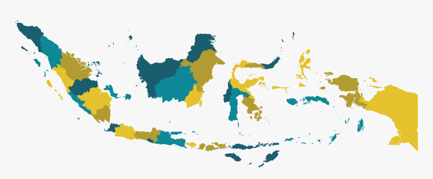
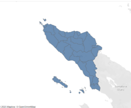

Rekomendasi KAPASDA / Detail

Pilih Provinsi :

| No. | Urusan | IKK | Rekomendasi |
|---|---|---|---|
| 1 | Kelautan dan Perikanan | Jumlah Total Produksi Perikanan (Tangkap dan Budidaya) dari seluruh kabupaten/kota di wilayah provinsi | Dilakukan melalui penertiban izin usaha perikanan tangkap, izin pembangunan kapal penangkap/pengangkut ikan, izin usaha pembudidayaan ikan (methods) |
| 2 | Perumahan Rakyat | Persentase Luas kawasan kumuh 10 – 15 Ha yang ditangani | Dapat dilakukan dengan membuat serangkaian prosedure untuk mengurangi luas kawasan kumuh (Methods); Dapat dilakukan dengan perencanaan perbaikan infrastruktur kawasan kumuh (Meterials) |
| 3 | Kepegawaian | JRasio Pegawai Pendidikan Tinggi dan Menengah/Dasar (%) (PNS tidak termasuk guru dan tenaga kesehatan) | Dilakukan pengukuran dan peningkatan rasio pegawai Pendidikan Tinggi dan Menengah/Dasar (PNS tidak termasuk guru dan tenaga kesehatan) (Man) |
| 4 | Pertanian | Produktivitas pertanian per hektar per tahun | Dilakukan dengan peningkatan sarana dan prasarana pendukung pertanian serta pengolahannya (methods) |
| 5 | Kebudayaan | Terlestarikannya Cagar Budaya | Dilakukan melalui pelatihan dalam rangka meningkatkan kompetensi SDM (man); melalui pengamanan, pemeliharaan, pengembangan dan pemanfaatan, serta publikasi cagar budaya |
Pilih Provinsi :